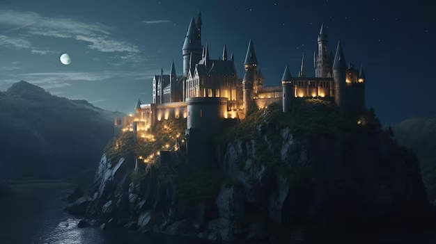
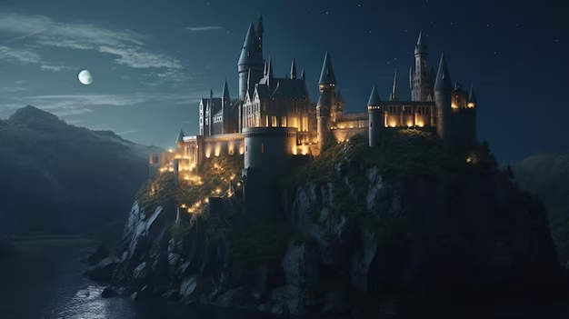

Article 1 : le commencement
L'histoire de Harry Potter commence avec un jeune garçon appelé Harry James Potter, qui
découvre le jour de ses onze ans qu'il est en réalité un sorcier. Il a passé toute sa vie chez les
Dursley, une famille de Moldus (personnes sans pouvoirs magiques) qui le traitent très mal. Harry
apprend qu'il est orphelin et que ses parents, James et Lily Potter, ont été tués par le sorcier
maléfique Lord Voldemort lorsque Harry n'était qu'un bébé.
Article 2 : Histoire de potter
Harry Potter est né en juillet 1980 de parents sorciers, James et Lily Potter. Cependant,
peu de temps après sa naissance, Lord Voldemort, un sorcier maléfique, tente de le
tuer. La malédiction rebondit étrangement, détruisant Voldemort et laissant Harry avec
une cicatrice en forme d'éclair sur le front. Harry devient orphelin et est élevé par son
oncle et sa tante moldus, les Dursley, qui le maltraitent. À l'âge de onze ans, Harry
découvre qu'il est un sorcier et qu'il est invité à rejoindre l'école de sorcellerie Poudlard.
C'est là que commence son aventure magique, marquée par l'amitié, les mystères et la
lutte contre les forces du mal, en particulier contre Voldemort, dont le retour hante le monde sorcier.
Article 3 : L'école spécial
Poudlard, l'école de sorcellerie dans l'univers de Harry Potter, est un lieu magique et
extraordinaire. Divisée en quatre maisons, Gryffondor, Serpentard, Poufsouffle
et Serdaigle, chaque maison a ses propres valeurs. Les élèves, triés par le Choixpeau
Magique, suivent des cours de magie variés enseignés par des professeurs
compétents. La Salle sur Demande apparaît selon les besoins, la Forêt Interdite abrite
des créatures magiques, et le Lac Noir entoure l'école. Des fantômes hantent les
couloirs, la Pensine explore les souvenirs, et la Chambre des Secrets révèle des
mystères. Poudlard est également le théâtre de tournois et d'événements magiques
qui enrichissent l'expérience des étudiants dans cet environnement unique et enchanteur.
 
